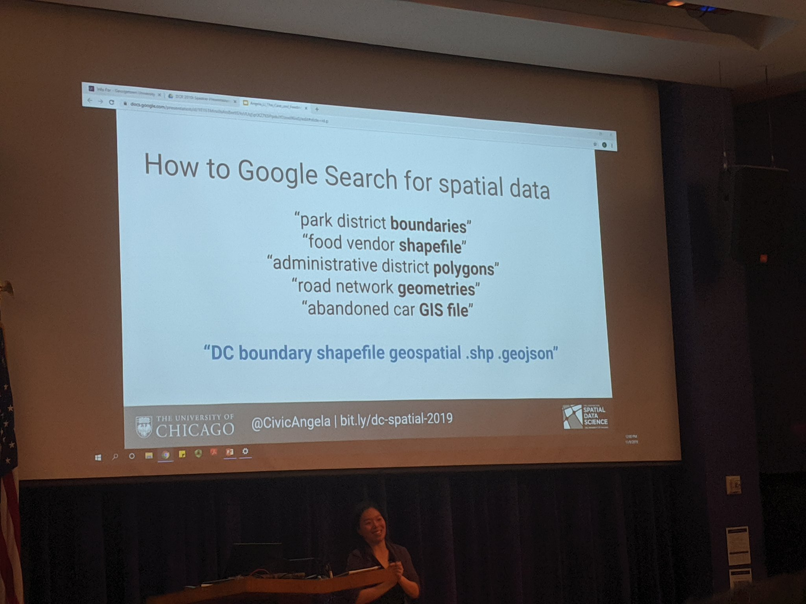

The overview: DC R 2019, hosted by Lander Analytics, was held Nov 7-9 at Georgetown University. The short action-packed conference consisted of one-day workshops and two days of talks. Find the videos on the DC R website (available soon) and associated tweets via the #rstatsdc hashtag on Twitter. Also, see Jared Lander’s blog post for a higher level overview of the conference with lots of fun pics.
Highlights for me personally included Malorie Hughes’ presentation of flexdashboard. Somehow in the hype of R shiny, I had missed this dashboard tool. I was also excited to learn about Dr Dasgupta’s coursedown package, which I’m looking forward to testing out for the class that I teach. Another highlight was learning more about the implementation of Google’s BERT model in R by Jon Harmon & Jonathan Bratt.
Read more: Below are my notes from selected talks. I’ve divided it into the following sections: Communication, Modeling, Spatial Analysis, General R Programming, and A Few Remaining Random Bits.
Communication (Dashboards, Websites, and Data Viz)
Coursedown: Managing Course Materials Using R Techniques, Dr Abhijit Dasgupta, @webbedfeet
Dashboarding Like a Boss, Malorie Hughes, @data_all_day
- Don’t email your results. Create a dashboard!
- Talk featured a demo of
flexdashboard. See more info aboutflexdashboardon RStudio’s website.
- Create using R Markdown. Just requires a different output type in the YAML header.
- See her GitHub repo for templates
- Tips for making your output look pretty on the dashboard:
- Use
printrto make printing R output look better. Less effort thanknitr::kable(). - Use
summarytools. It’s not great YET for R Markdown, but keep tabs on it. - For model output, use
stargazer DT::datatable()for interactive table (see advanced options in this function for fancier options for the table)- For interactive plots:
highcharter. Assign colors withcolorize().
- Use
- She included an export/download data button on her dashboard. See her code to learn how to do that.
- See Malorie’s official DC R dashboard:
Using networkD3 and R to Visualize and Explore Relationships in Data, Dr Ami Gates, @DrGates309
- Talk focused on
networkD3, which is nice for interactive networks. - Other options for visualizing networks:
igraph,ggnet2()(part of GGally), andvisNetwork arulespackage for association mining in R. She used it to find associated words considering both how often words appear together and also how often they appear in same dataset (in her example, how often in the same tweet)arulesViz- for visualization of association rules- She used the
igraphpackage to massage the data before giving it tonetworkD3
Better DataViz in ggplot2: Tips, Tricks, and Examples, Alex Engler, @AlexCEngler
ggplot2+sffor bivariate plots:ggplot2::geom_sf(). See the Drawing beautiful maps with R, sf, and ggplot2 sf tutorial on r-spatial.org.ggtextto add text to plots using markdown. Includes text formatting. Showed an example of how to highlight parts of title to match highlighted part of graph.gghighlightto highlight parts of graph with color (and grey out rest)ggplot2::annotation_custom()to add a plot on top of another. Create a “grobe” and drop it somewhere. Use to zoom in to a map with a bounding box. (My comment: seems similar tocowplot).geofacet::facet_geo()to create a plot per state, positioned in the location of the states on the map.ggplot2extensions: See www.ggplot2-exts.org/gallery and therayshaderpackage.
Modeling
RBERT: Cutting Edge NLP in R, Jon Harmon, @JonTheGeek
- BERT: Bidirectional Encoder Representations from Transformers. Transfer learning for natural language processing. Created by Google. RBERT is the R implementation.
- Older embeddings have one embedding per word. Can’t help this situation: “I saw the branch on the bank.” vs “I saw the branch of the bank.” BERT addresses this issue.
RBERTviz: Visualize attention and PCA. Let’s you see how BERT is thinking. Showed an interactive demo— go watch the video!- BERT has 12 layers.
- RBERT usable now (available on GitHub), but the Jon and Jonathan are making it more user-friendly. Goal: On CRAN by end of 2019
- Works with tensorflow 2.0 (in testing)
- Example shown: Used RBERT to pull out features for xgboost model.
- Slides available here
Optimizing Topic Models for Classification Tasks, Tommy Jones, @thos_jones
- Performing PhD research to optimize LDA topic models
- Cousin to LDA: Text embeddings (considered state of the art). In his words, LDA stopped being cared about after deep learning came along. However, he thinks the LDA work was never completed to determine a good LDA model. He thinks LDA might be competitive with deep neural nets if tuned appropriately.
- Walked through an example of classifying 20newsgroups
- Tech stack:
textmineR(maintained by Tommy),randomForest(simple so he could focus more on LDA),SigOptR,cloudml,magrittr,stringr,parallel(part of R-core) SigOpt: ensemble of Bayesian optimizers for picking hyperparmeters (more efficient than grid search). SigOptR is an R API for SigOpt. -Used unigrams, removed stopwords, and words that were seen in less than 5 docs- Optimized for accuracy and coherence. LDA was way more accurate than LSA. Showed a accuracy vs topic coherence.
Topic Modeling Consumer Complaints at the Federal Reserve, BJ Bloom, @bj_bloom
- Goal: Use consumer complaints to inform risk analysis for Federal Reserve Board
- Used LDA topic modeling
- Main LDA packages in R:
lda(old, fine),topicmodels(special snowflake, have to re-index to 0, tricky to use),stm(recommend, structural topic modeling, can use to incorporate metadata into topic model),textmineR(recommend, in his opinion includes diagnostic measures that make sense) - In his words, “Don’t use
tm. It had its place back in the day.” Instead, he’s a fan oftidytext. - Other R packages used:
textrank(for pagerank)
Spatial Analysis
The Care and Feeding of Spatial Data, Angela Li, @CivicAngela
- Slides available here
- She described the steps before the fancy plots and regression, focusing on the data.
- Two types of spatial data:
- Vector data - points lines polygons (she focused more on this)
- Raster data - grids, pixels, cells
- Geo-coding:
tmaptools::geocode_OSM(“Georgetown University”)gives coordinates (to translate human spatial data to computer understandable spatial data). Note that OSM = “open street map.” Talk to your GIS librarian (or if you have ARCGis) to get coords. - In her words: “Spatial file formats are confusing.”
- Spatial data formats:
.shp(shapefile made up of 4 files),.geojson(lots of web-based mapping),.gpkg(new and good, but not common yet),.csv,.tiff(for raster data) - Library she uses:
sfpackage.st_read()orread_sf()to create a tidysfdata frame. - Her tech stack: geoDa, QGIS, ArcGIS, PostGIS, CART, R
- R packages she uses the most (packages in parens are the “comparable” non-spatial versions):
rayshaderfor 3D plotting.
- Use
mapviewfor GIS-like experience - Think beyond dots on a map. Are there clusters? Look at spatial auto-correlation and spatially constrained clustering.
- Pre release of
rgeodaon GitHub - See
#rspatialon Twitter - Most important slide she’s ever made in her life:
R is Not Just Basic Stats: Think Spatially!, Tatyana Tsvetovat, @t_tsvet
General R Programming
Ten Tremendous Tricks in the Tidyverse, David Robinson, @drob
Be sue to catch his #tidytuesday screen casts on YouTube. Ten tricks that people have liked from his screen casts:
count(): One of the most used EDA functionscount(column, sort, wt, name): Create a new variable within count. For example:count(decade = 10 * (year %/% 10)to produce counts for each decade.add_count()adds a count column (really useful to combine with filter to getxwith a minimum count)- Use
summarize()to create a list column. Looks likedata %>% groupby() %>% summarize. Example:summarize(test = list(t.test(avg_score)))Then use broom to visualize. See chapter 25 of R for Data Science. - Use the combination of:
count(),fct_reorder()(to turn column into ordered factor),geom_col(use instead ofgeom_bar(stat = ‘idendtity’)),coord_flip(),
fct_lump()to combine least/most common levels togetherscale_xory_log10()to use log scale. In his words: “I suspect much more data is log-normal than normal.”tidyr::crossing()to find all combinations of multiple vectors. Example:crossing(a = 1:3, b = A:Z, c = 10:20). Can use for simulations in place of for-loops.separate()to split a column into multiple columns based on a regexextract()to extract information from a column based on a regex
Raising baby with R, Jared Lander, @jaredlander
- Jared and his wife recently had a baby. He described his use of R to choose the baby’s name and analyze its eating, sleeping, and poo patterns.
- See the
babynamespackage for data about popularity of baby names - Analyzing time series data:
tsibble,fable,feast. Usemodel()function in this package to fittsmodels. Useautoplot()to plottsdata.index_by()is thetsequiv ofgroup_by(). fable.prophetpackage to use prophet in a fable framework. Used this to perform change-point detection.- Slides available here.
R and Python coexisting in the same Development environment, Dan Chen, @chendaniely, (Author of “Pandas for Everyone”)
- What he believes Python does better: environments, web development, and hardware
- What he likes about R: communication (
shiny,rmarkdown,ggplot2) - Python environments in R:
conda_envs <- reticulate::cond_list()
conda_envs$name[[1]] #have to restart R if you want to change env again)- Most data scientists using Python use anaconda.
- Don’t mix anaconda R package installation with
install.packages() - New model pipeline in R:
rsample,recipes,parsnip,yardstick
- Described workflow: Python
joblibfor “pickling” a model in python. Read it into R. Then use Rshinyto display - [
blogdown] supports jupyter notebooks knitpy:knitrimplementation in python- Use Apache arrow to pass datasets between R and python
- Information on installing python here
- Slides available here
Managing Your Cloud: Working with APIs, Marck Vaisman, @wahalulu
A Few Remaining Random Bits
- Check out the
memeRpackage by @sctyner - R Markdown tips from @datadanya: Include
session_info()at the end of all markdown docs. See https://bootswatch.com/3/ for a list of R Markdown themes - Use
gmailrto send email from R - See
learnrfor creating teaching materials. (Use in conjunction withgradethis - For conversations about R administration, see
#radminson Twitter, solutions.rstudio.com, or the radmins channel on community.rstudio.com. Management and IT folks should watch Kelly O’Briant’s talk, Reflections on a Year Spent Talking to Data Scientists About DevOps.